The transition of the global energy infrastructure toward a decentralized, high-renewables model has necessitated a fundamental reimagining of energy storage assets. Once relegated to the periphery as simple emergency backup hardware, Battery Energy Storage Systems (BESS) are now recognized as sophisticated, grid-responsive, digital-to-chemical conversion engines. Central to this transformation is the Energy Management System (EMS), the supervisory control layer that serves as the brain and command center of the entire installation.
The role of the EMS begins long before a system is energized on-site. It is a foundational element in the manufacturing and production cycle, where it is integrated with subordinate controllers, flashed with specialized firmware, and used as the primary tool for calibrating and validating system performance during Factory Acceptance Testing (FAT).
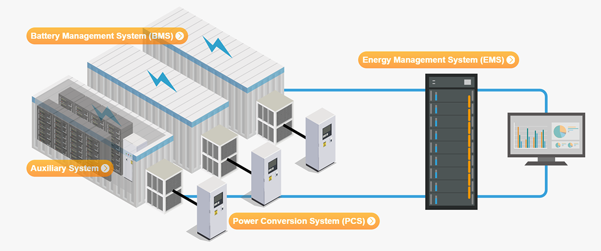
EMS Functional Requirements
The EMS function needs to meet the requirements for centralized monitoring and management of the entire energy storage power station. The EMS connects with the PCS, BMS, and auxiliary equipment (fire protection system, liquid cooling system, air conditioning system, dehumidifier, etc.), collects operating data from each subsystem, and uploads important information to the power grid dispatch center. At the same time, it receives commands from the dispatch center and, based on different operating modes, adopts corresponding optimization strategies to control the charging and discharging of the energy storage system.
EMS responds to scheduling commands such as AGC and AVC; the coordinating controller jointly completes local functions such as primary frequency regulation and dynamic voltage regulation.
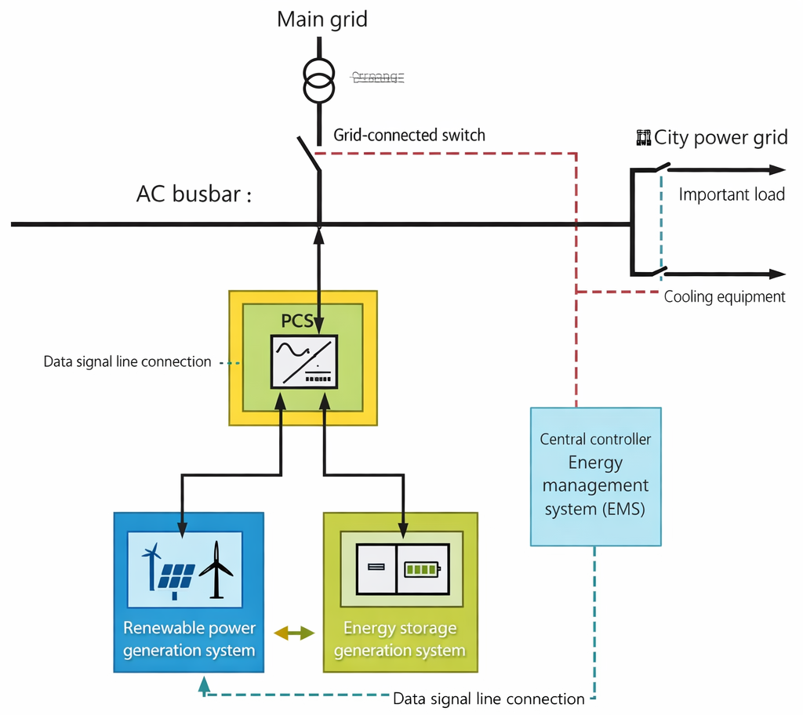
The EMS should have a battery SOC balancing strategy and SOC hysteresis function to ensure the safe, stable and continuous operation of the energy storage power station.
The EMS should have peak shaving and valley filling, AGC, AVC, tracking plan curve, primary frequency regulation, local voltage regulation and manual control modes.
EMS has the ability to communicate with operation and maintenance platforms, new energy big data platforms, DCS (distributed control systems), and other SCADA systems.
Relevant Standards for EMS System Development
EMS development must adhere to relevant domestic and international standards, and the operating system should consider domestically developed operating systems. The database management system should include relational databases, real-time databases, and time-series databases. Communication protocols should adopt power system communication protocols such as IEC 61850 and IEC 60870-5-104. Data model design should refer to the IEC 61970 CIM Common Information Model standard, and the network should adopt the TCP/IP Common Model protocol; the UI should adopt the OpenGL 3D graphics standard.
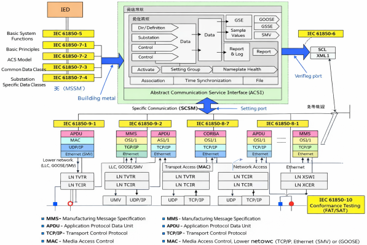
EMS should adhere to the principle of openness.
EMS should have good online scalability in both software and hardware, and can be built, expanded, and upgraded gradually without affecting normal operation.
Each functional module of the EMS system platform should provide a unified standard interface to support user and third-party application software program development and ensure integration with other systems.
EMS should provide convenient development interfaces, algorithm interfaces, development specification interfaces, historical data interfaces, and real-time library interfaces, and the system data capacity should be able to be expanded at any time.
EMS System Architecture
The entire energy storage monitoring system adopts a three-layer architecture, namely the dispatch and control center layer, the energy storage station monitoring layer, and the energy storage basic unit layer.
Dispatch and Control Center Layer: The centralized control center system adopts advanced technologies such as the Internet of Things for Energy, cloud computing, big data analysis, and artificial intelligence to realize functions such as centralized management and control, coordinated control, big data analysis, intelligent operation and maintenance, and panoramic display of decentralized energy storage power station equipment.
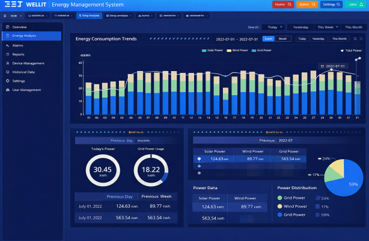
The centralized control center system collects operational information from each energy storage station, enabling unified data storage and centralized monitoring. It comprehensively detects, compares, and analyzes information such as the operating status, fault information, power consumption information, power generation information, energy efficiency, and battery performance of the energy storage stations. It can also perform preventive maintenance of equipment and conduct full life-cycle management of the energy storage stations, significantly improving overall economic efficiency.
Energy storage control centers can be applied in scenarios such as power plant control centers, power grid dispatch centers, user-side distributed energy storage station monitoring centers, and virtual power plants.
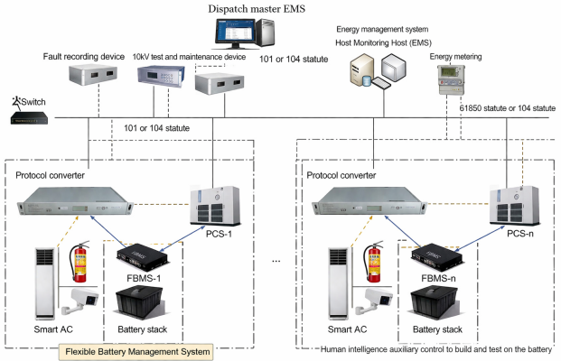
Energy Storage Station Monitoring Layer: The monitoring layer of the energy storage station is divided into two data analysis platforms: EMS and BMS.
EMS section: EMS is responsible for the data acquisition and monitoring of the entire energy storage station, as well as the multi-energy coordination and optimization management, and is the central hub of the energy storage station.
- Downward: Receive PCS information and upload important information to the dispatch system control center.
- Upward: Receive scheduling AGC and AVC instructions, and issue charging and discharging control instructions to PCS according to the control strategy.
- Coordinated Control: Directly collect voltage and frequency data from the grid connection point to provide emergency voltage support and rapid frequency response. (Primary Frequency Regulation).
- Telecommunication: The energy storage EMS communicates with the power grid dispatch center through telecontrol equipment and the existing vertical encryption and dispatch data network. The energy storage EMS and the booster station share two telecontrol devices. The EMS and the telecontrol equipment use dual-network redundant communication to ensure the reliability of the communication connection.
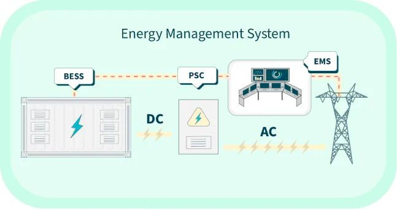
BMS Data Analysis Platform
- Receive BMS information and upload the information to the centralized control center system.
- Real-time monitoring of battery operating status, fault alarm, fault diagnosis, performance evaluation, etc.
- Provide reference data for energy storage operation and maintenance.
- Provide data support for optimizing EMS control strategies.
The BMS data analysis platform and the EMS data platform exchange data via a data bus. The BMS data analysis platform only transmits key data after analysis and diagnosis to the EMS. Based on the battery performance data evaluation results, the EMS continuously optimizes the control strategy to improve system safety, extend battery life, and enhance the economic efficiency of the energy storage power station.
Basic Energy Storage Unit Layer
Edge servers complete the data acquisition of PCS data, BMS data, and information access of auxiliary equipment such as fire protection and air conditioning. They apply cloud-edge collaborative artificial intelligence technology to achieve local data analysis, security early warning, and collaborative control.
Communication hub, used to aggregate data links of the prefabricated battery compartment and realize connection with the monitoring layer.
Environmental control system: used to collect real-time operating information of air conditioning, fire protection, temperature, access control, etc., and to take timely measures such as alarm, protection, and emergency braking.
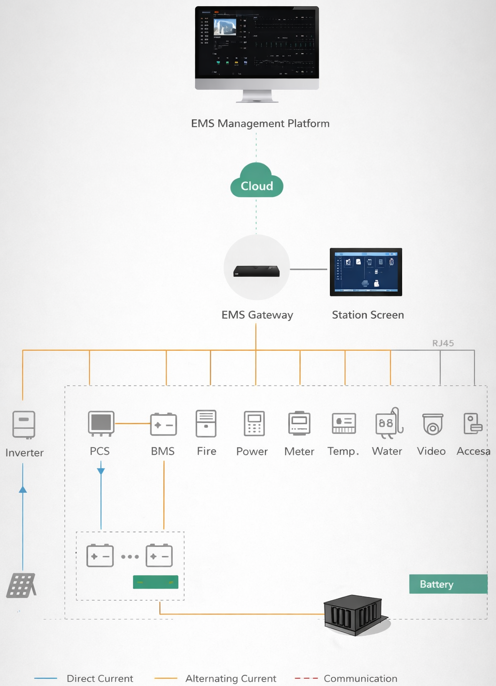
EMS Hardware Components
Hardware Configuration Requirements for Energy Storage EMS System
Redundancy Configuration: To improve system stability, large and medium-sized energy storage EMS generally adopt a configuration where the control network and data network are separate. Both the control network and data network use a primary/backup dual-network (commonly known as AB network) redundancy configuration. Critical equipment such as servers uses a dual-machine hot standby method.
Energy Storage EMS Requires Communication with Clock System: The operation of an energy storage EMS requires a strictly accurate clock source. The system needs to be equipped with time synchronization equipment, such as astronomical clocks like BeiDou or GPS, or share a clock with the substation's secondary system for unified time synchronization across the entire station. The coordination controller (co-controller) requires B -code time synchronization.
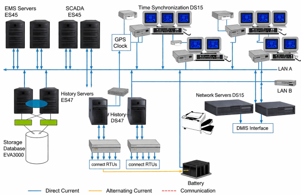
Main Hardware Components of Energy Storage EMS
Communication Server (Front-end Communication Server): Used for data acquisition at the station control layer. The communication server is configured with dual-machine, dual-network redundancy, operating simultaneously and serving as backup for each other. The host equipment is arranged in a panel configuration in the central control room.
Application Server: Serves as the central hub for data collection, processing, storage, and network management at the station control layer. The host computer is configured with dual-machine, dual-network redundancy, operating simultaneously and serving as hot standby for each other. The host computer equipment should ideally be arranged in a panel configuration within the central control room.
Data Server: Historical data storage, used for data tracing and querying.
Web Server: Generally, a firewall or physical isolation device is used to communicate with the energy storage EMS to obtain real-time and historical data and publish it externally via the web . The web server is usually deployed on the power plant owner's office and operation and maintenance network.
Coordination Controller (Co-controller): The co-controller connects to the TV equipment in the substation. It directly collects voltage and power data from the main grid connection point and the energy storage grid connection point at high speed. It controls multiple PCSs to achieve primary frequency regulation and dynamic voltage regulation functions. The co-controller and EMS operate in parallel. Data communication occurs between the co-controller and EMS. According to priority, when the co-controller starts, it sends a co-controller start signal to the EMS. Upon receiving the signal, the EMS suspends control over the energy storage equipment and transfers control to the co-controller. When the co-controller completes control, it releases the system start signal, and control returns to the EMS. The co-controller equipment includes the main co-controller and the co-controller terminal.
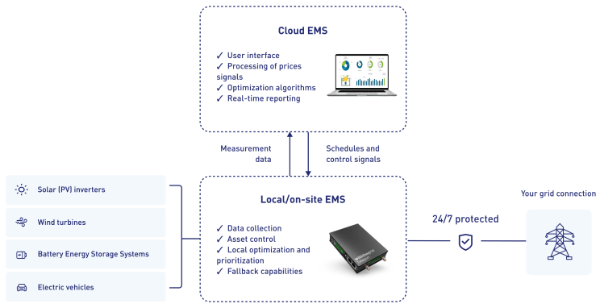
In addition, the coordinating controller can also allocate power according to the remaining chargeable and dischargeable current state of each battery system, so that the performance state of each battery compartment system is balanced.
Communication Management Unit: An embedded communication device with multiple serial ports and multiple network ports. A communication management unit is required when the EMS and remote-control systems use serial communication.
Network Equipment: Network switches and accessories. Network switches should ideally have a transmission rate of 1000 Mbit/s or higher and be equipped with both electrical and optical ports. The number of network ports should meet the application requirements of the power station while also satisfying security requirements. Managed switches are recommended for critical relay nodes.
Communication Gateway: Employs an embedded computer to centrally collect and upload information from multiple devices, enabling mutual conversion between different protocols.
Satellite Clock: Provides a precise clock source for the entire EMS system. It typically supports both BeiDou and GPS clock systems.
UPS: Backup power supply, which generally provides stable power for more than 30 minutes.
Remote Control Unit (RCU): Used for communication between energy storage power stations and the power grid dispatch center. It generally adopts the IEC 60870-5-104 power communication protocol. The RCU is configured in a dual-unit configuration.
Vertical encryption device: used for communication between the moving device and the power grid dispatch center, and needs to meet the encryption requirements of the large power grid.
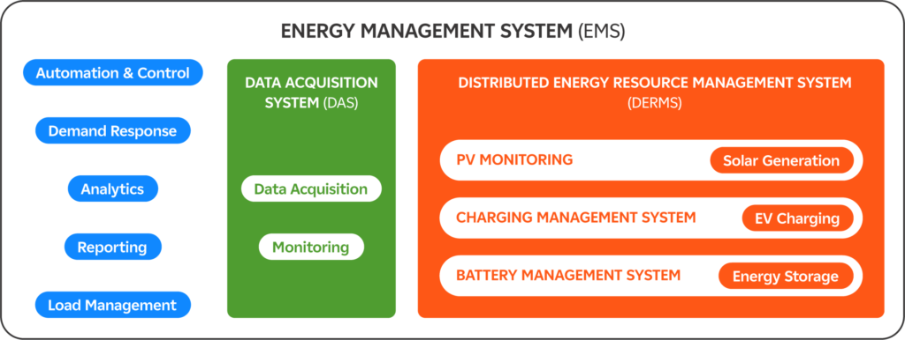
Physical Isolation Device: The energy storage MES is located in the first security zone of the power grid. Information exchange between the energy storage EMS and other security zones requires a physical isolation device. This physical isolation device is a unidirectional data transmission device. Forward isolation is required when the energy storage EMS transmits information to other security zones; reverse isolation is required when other security zones send information to the energy storage EMS.
EMS Integration in the Manufacturing and Assembly Value Chain
The production of a utility-scale BESS is an intensive process that moves from the chemical refinement of battery cells to the integration of massive containerized systems. The EMS is a critical component of this value chain, particularly during the final assembly and system-level integration stages.
Factory Floor Integration and Manufacturing Execution Systems
In modern BESS assembly environments, individual cells are sorted based on their electrical characteristics and assembled into modules and racks. These racks are then installed into standardized steel containers, which also house the thermal management systems (HVAC or liquid cooling), fire suppression equipment, and the central control units. The EMS is typically hosted on a specialized controller, such as a high-performance PLC or an industrial edge computer, which must be physically and logically integrated into the container’s communication network.
Precision Assembly and "Poka-Yoke" Mechanisms
The EMS plays a role here by serving as the diagnostic hub during assembly. As subsystems are connected, the EMS can run automated communication checks to verify that every BMS module and PCS inverter is reachable and reporting accurate data. This real-time validation on the assembly line minimizes process variation and ensures that the final system is consistent and auditable—a key requirement for project bankability.
Communication Protocol Configuration
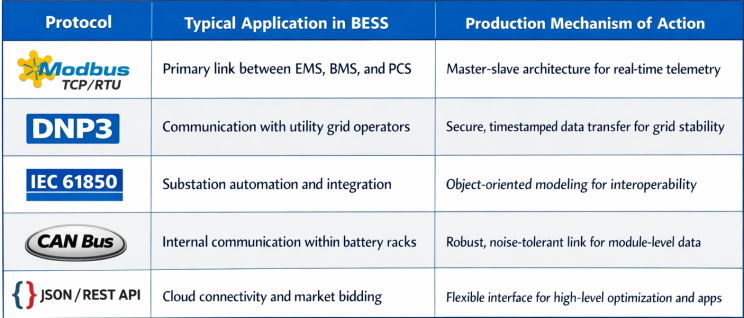
The EMS serves as the translator between these protocols, consolidating cell-level data into a unified format that can be easily analyzed by operators or autonomous trading algorithms.
Use-Case Specific EMS Design in Production
The intended application of a BESS has a profound impact on how the EMS is configured on the factory floor. A system designed for high-frequency trading in the Australian market requires vastly different control logic than a behind-the-meter system for a Mexican factory.
High-Speed Applications: Frequency Regulation
Frequency regulation is the primary defense mechanism of the power grid, requiring BESS to respond to imbalances between supply and demand within milliseconds. For these applications, the EMS must be designed with sub-second response capabilities. This requires:
- Optimized Power-to-Energy Ratios: The system must be capable of discharging its entire capacity very quickly (e.g., a "0.5-hour" system).
- FFR and FCR-D Logic: The EMS must be programmed with Fast Frequency Response (FFR) and Frequency Containment Reserve (FCR) algorithms that allow it to act autonomously without waiting for a signal from the central utility SCADA.

Commercial and Industrial (C&I) Applications: Peak Shaving
For industrial facilities, the value of BESS lies in reducing electricity costs by shaving the demand peaks that drive up utility bills. In these settings, the EMS focuses on:
- Load Leveling and Shifting: Charging during off-peak hours and discharging when the facility’s demand is highest.
- Zero Feed-In Compliance: Ensuring that the BESS never injects power back into the grid, if prohibited by local utility rules.
- Power Quality Smoothing: Protecting sensitive robotic and semiconductor manufacturing lines from voltage sags and frequency flickers.
In these C&I scenarios, the EMS acts as a shield, providing a seamless transition to backup power during grid failures to prevent costly production line shutdowns.
Vertical Integration vs. Agnostic Platforms
Tesla represents the pinnacle of vertical integration, designing and manufacturing the entire ecosystem of hardware (Megapack), firmware, and software (Autobidder, Powerhub). This unique seamless integration allows for superior performance, as the software is designed with a deep understanding of the battery physics down to the cell level.
Conversely, providers like Wärtsilä and Fluence offer highly sophisticated but more hardware-agnostic EMS platforms, such as GEMS and Fluence OS. These platforms are designed to integrate with diverse battery and PCS manufacturers, allowing asset owners to maintain a consistent control and operations interface across a fleet of projects that may use different underlying hardware.
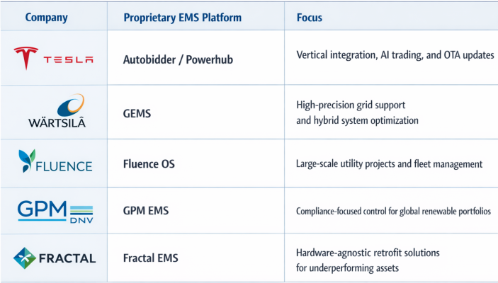
Lifecycle Management and Long-Term Health
The role of the EMS does not end after production and commissioning. It is a vital tool for long-term asset management and warranty compliance.
Warranty Adherence and Health Tracking
Battery warranties are typically tied to specific operational limits, such as a maximum number of cycles per year or a cumulative energy throughput. The EMS acts as the black box that records every cycle, ensuring the operator stays within the terms of the Long-Term Service Agreement (LTSA).
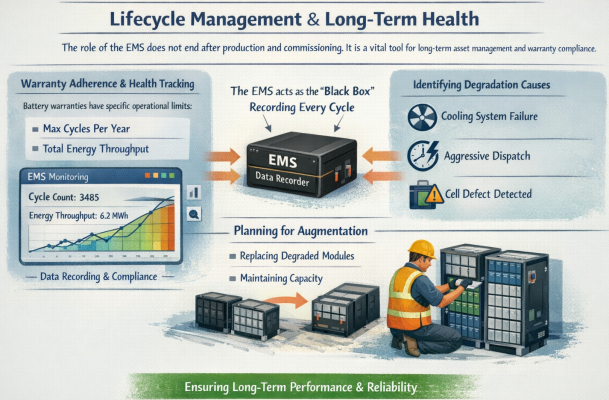
If a battery begins to degrade faster than predicted, advanced BESS analytics integrated with the EMS can pinpoint the root cause—whether it is a faulty cooling system, an over-aggressive dispatch schedule, or an inherent cell defect that was missed during production. This visibility is essential for asset owners who need to plan for augmentation—the process of adding new battery modules to maintain the systems rated capacity as it ages.

Conclusions and Future Outlook
As the industry moves toward greater use of artificial intelligence and Model Predictive Control, the EMS will become even more central to the production and operation of BESS. The convergence of hardware and software will continue to drive down the Levelized Cost of Storage (LCOS) while improving the safety and reliability of these critical assets. For manufacturers, the EMS is no longer just a control platform; it is the strategic heart of the system and the primary engine of long-term commercial value. The future of energy storage is not just about the batteries we build, but the intelligence we use to manage them.